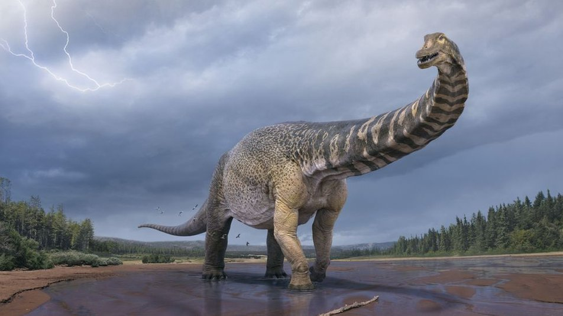
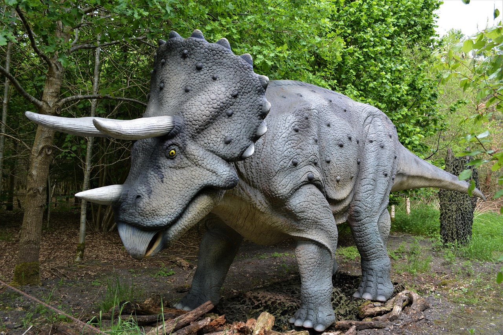

Диноза́ври (Dinosauria — від дав.-гр. δεινός — «страшний» і σαῦρος — «ящірка») — надряд завропсидів, який з’явився близько 251 млн років тому. Динозаври були панівною групою наземних хребетних в мезозойську еру (тріасовий, юрський і крейдовий періоди), аж до масового вимирання 65 млн років тому. Описано понад 1000 видів. Рештки знайдені на всіх сучасних континентах. Поділяються на 2 ряди: птахотазові (Ornithischia) і ящеротазові (Saurischia), останні були предками птахів. Довжина різних видів коливалася від 0,35 до 35 м, вага — від 110 грамів до понад 100 т.
Традиційно «динозаврами» називають тільки динозаврів-нептахів. Найближчими великими спорідненими групами тварин є крокодили та вимерлі птерозаври.
 